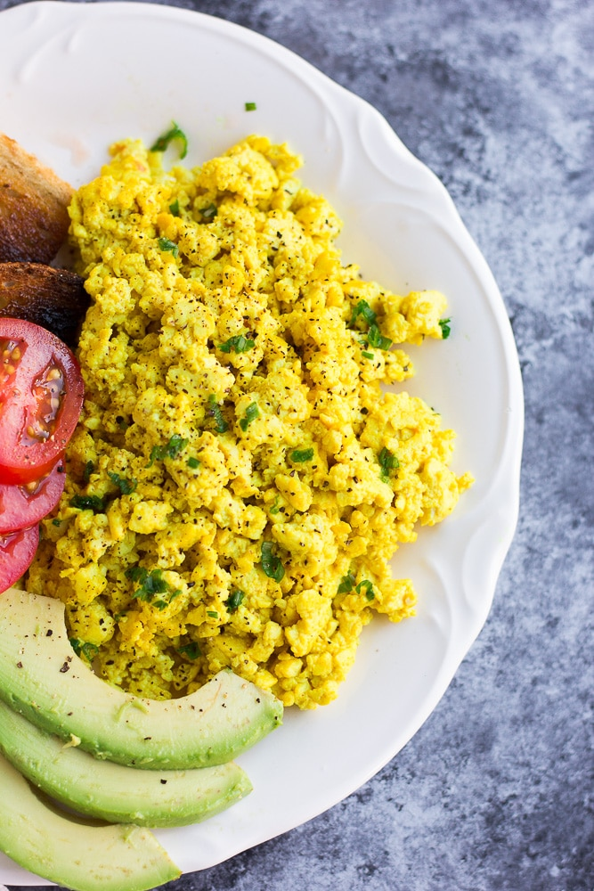

Tofu Scramble

Description
A simple tofu-scramble recipe that can be prepared in about 15 minutes.
Ingredients
- 16oz Tofu
- 1/2 medium Onion
- 3/4tsp black salt
- 1tsp garlic powder
- 1/2tsp onion powder
- 1/4tsp tumeric powder
- 3tbsp nutritional yeast
Steps
- Begin cooking the tofu in a medium skillet. Cook till most of the moisture has evaporated and the tofu has begun to brown.
- Add the onion and continue to cook till the onions begin to sweat.
- Add remaining ingredients and cook till lightly brown.
Back to recipes